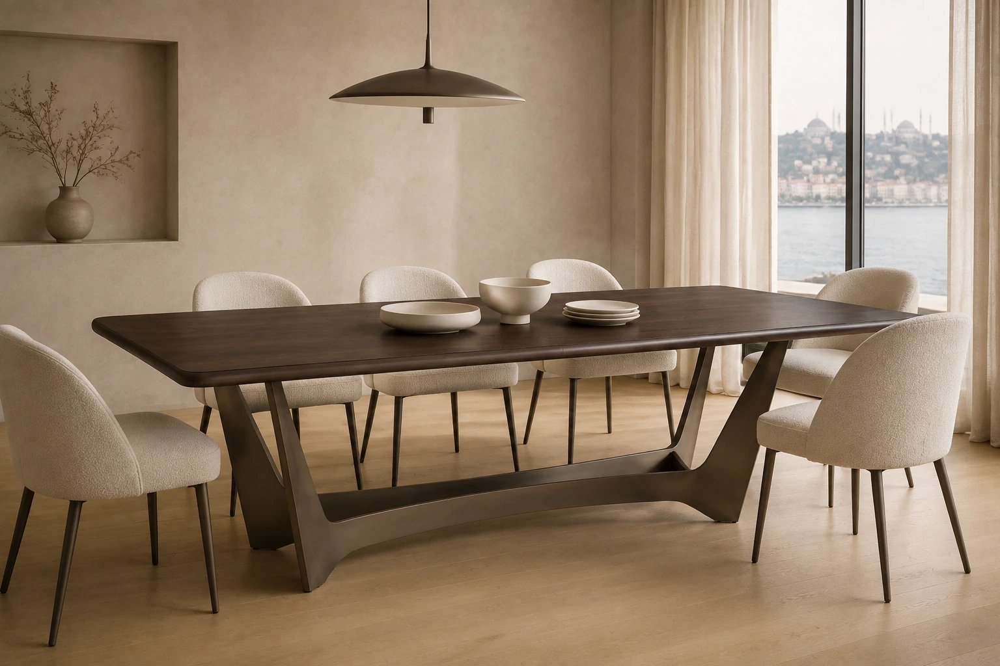

LUYA PROJECTS · Restoran & Kafe
Restoran & Kafe
Restoranda mobilya, masa devrini ve servis akışını doğrudan etkiler. Kaç kişi oturacak, garson nereden geçecek, bar kaç kişiye hizmet edecek: önce oturma planını çıkarıyor, mobilyayı ona göre tasarlıyoruz.

Kapsam
- Masa, sandalye, bar taburesi
- Sedir ve sabit oturma (banquette)
- Bar tezgâhı ve arka bar
- Servis istasyonu ve garson dolabı
- Karşılama (hostes) bankosu
- Dekoratif panel, raf ve ayırıcılar
- Teras ve dış mekân mobilyası
Restoran projesinde neye dikkat ediyoruz
Oturma planı
Kapasite, masa kombinasyonları ve servis koridorları mobilyadan önce çizilir. 2'li masalar 4'e, 4'lüler 8'e birleşebilir.
Temizlenebilirlik
Leke tutmayan döşeme kumaşı, silinebilir tabla, sandalyede toz tutmayan birleşim detayları.
Sağlamlık
Günde defalarca çekilen sandalye için güçlendirilmiş iskelet, sallanmayan ayar ayaklı masa tabanı.
Hızlı açılış
Kira başlar başlamaz açılmak isteyen işletme için üretimi inşaatla paralel planlıyoruz.
Projenizi konuşalım
Plan, konsept görseli, oda listesi, ne varsa gönderin. Kapsamı birlikte netleştirip size bir yol haritası ve teklif çerçevesi dönelim.